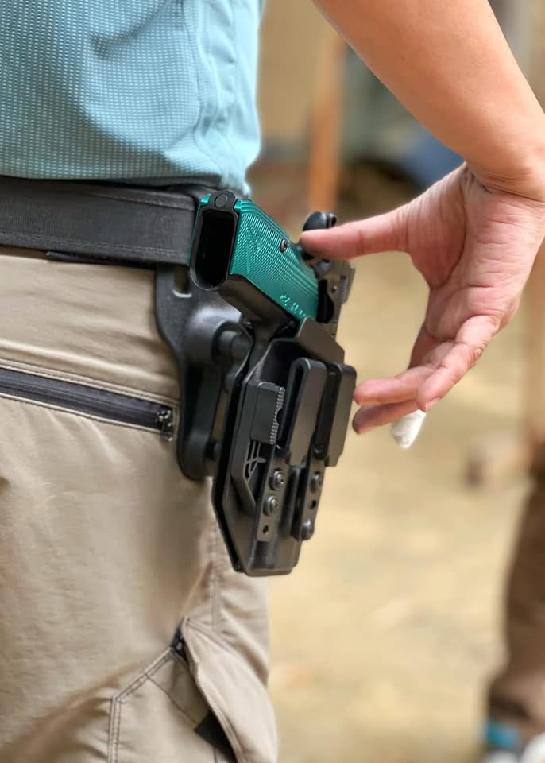
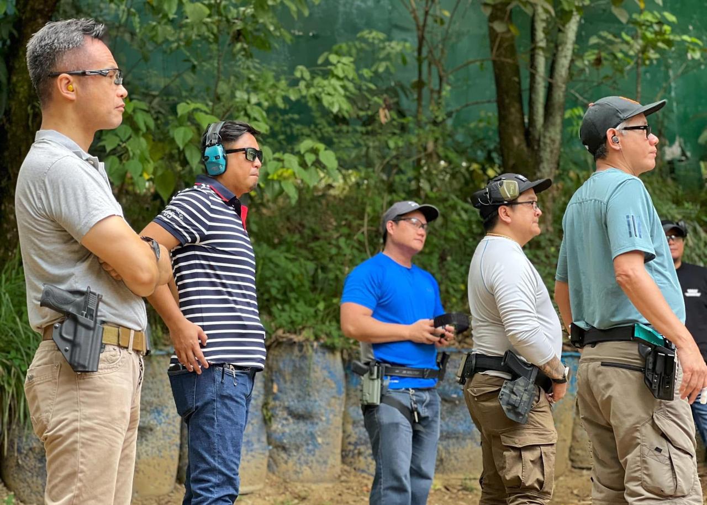
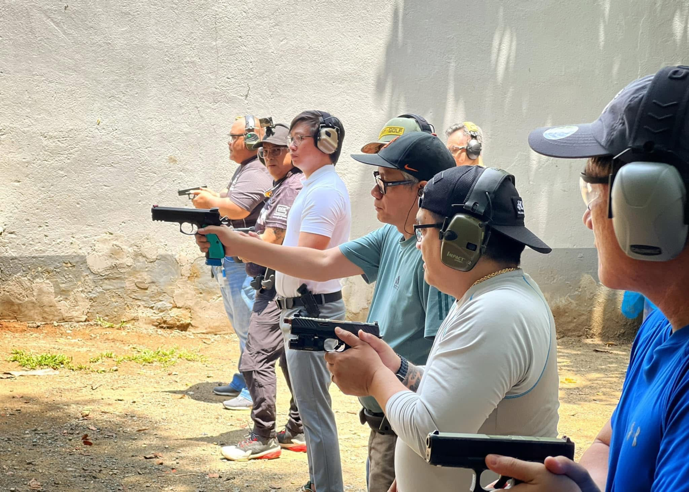

Hobbies & Interests
Drones!
I have always been fascinated with flying. In fact, as a child i dreamt of being a pilot but destiny had other plans for me. Drone flying is the next best thing to being an actual pilot, but on a really minute scale.
See some of my piloting skills below!
Practical Shooting
Recently, I have been training in Practical Shooting as I needed a new hobby to take my head out of the stress at work. Unbeknownst to some, this sport provides a great sense of focus as you try to coordinate mind and body to achieve fast and accurate shots.
See some of my training sessions below:



Cyber Security
I am passionate about cyber-security and enjoy exploring emerging threats and solutions through hands-on projects and continous learning. I try to stay updated on industry trends to enhance my skills and knowledge, while sharing it with others to contribute to the safety of cyberspace.
My Contact Information
If you want to know more about me, please reach out to me via email at chris[dot]yutan[dot]ga[at]gmail.com, or click on my social media pages below:
Image Credits
Some images used on this site are from third-party sources and are used with permission or under fair use.
For more information, see the original sources:
- MP Concepts Training FB Page
- ERC FB page
© 2026 Chris Yutan. All rights reserved.